Spring Kickstart,
day 1
What goes out today, what people see when they open the app, where things stand, and how JFI takes over coaching.
Thursday 1 October 2026. Screens are real captures from this morning's build on demo accounts.
What goes out today
Nothing has been sent yet. Each one waits for your yes.
Push notification
Everyone in the app with notifications on (239 clients, about 1 in 5)
Your new JF Coach is here. Tap to set up your Spring plan (2 minutes).
Tap opens the app: film, welcome, setup.
Website entrants who haven't signed in yet (about 83)
Your free JF Coach app is ready. Get started: two minutes to set up. Stuck? Reply, or ask JFI in the app.
Not built yet. Day 2, 3 and 5 reminders also not built.
Global chat post, from you
Everyone in the global room (323 people; the other ~1,000 aren't in it)
Make the room announcement-only first: right now anyone can post.
Opening the app for the first time
New member
Website entrant or brand-new client.
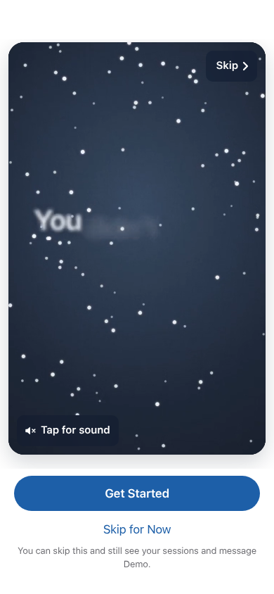
Plays muted for 59 s. Skip in the corner.
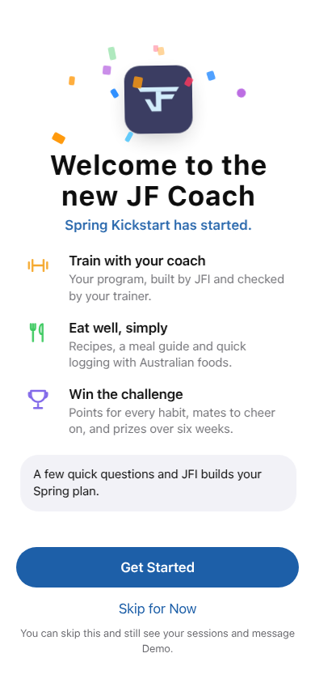
Get Started, or Skip for Now.
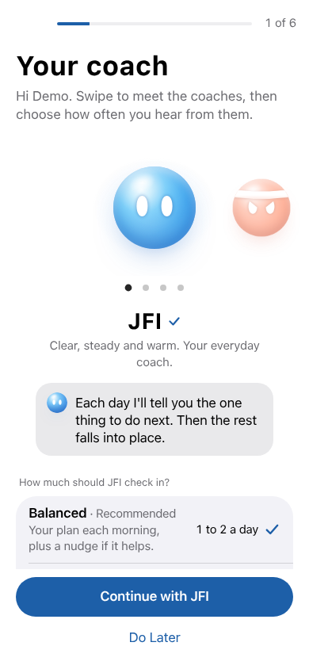
JFI, Sarge, Prof or Buddy, and how often it checks in.
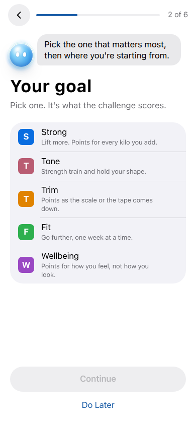
Strong, Tone, Trim, Fit or Wellbeing.
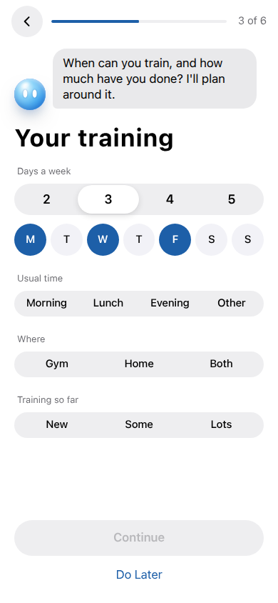
Days, time, where, experience.
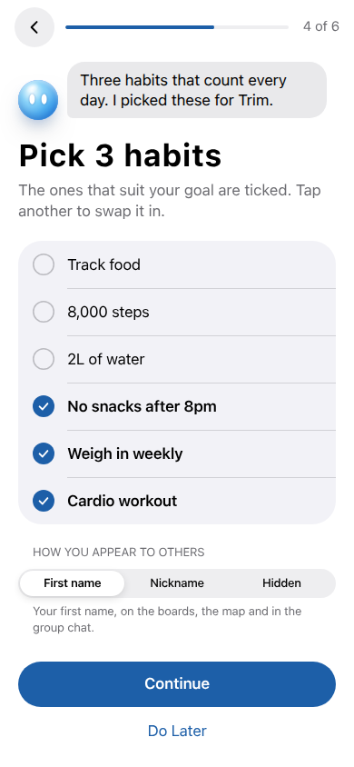
Plus how you appear on the board.
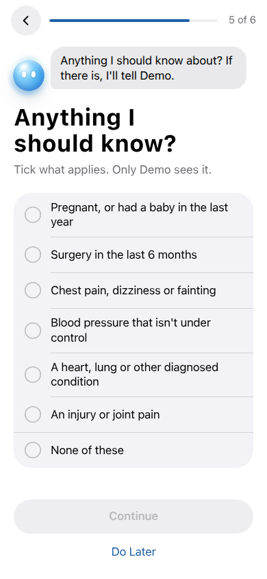
Yes or no. The program gate is off since 08:25.
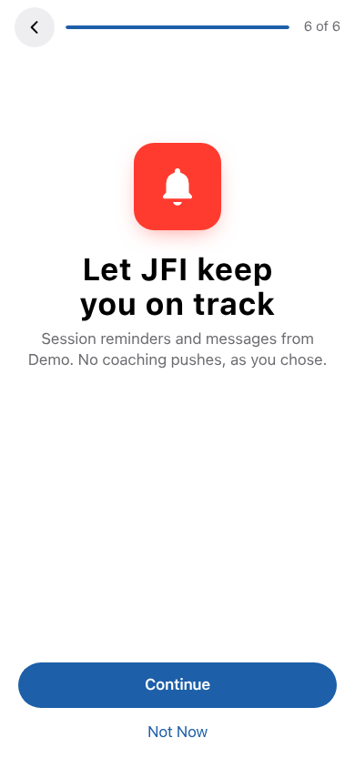
Asks for push permission.
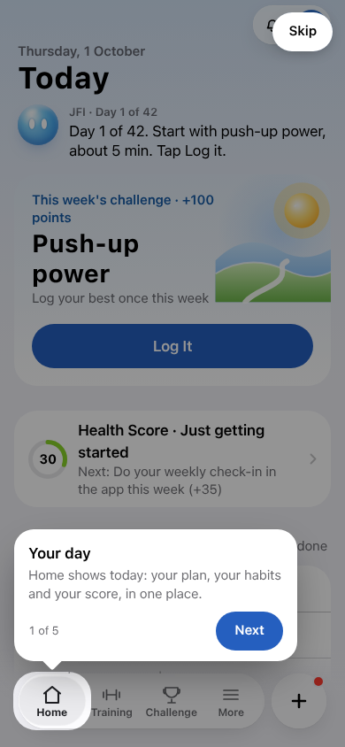
Your day, Training, Challenge, Add, More.
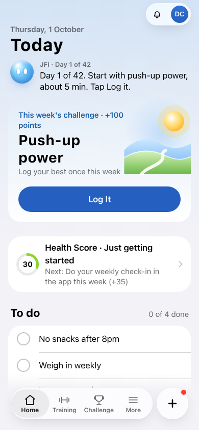
This week's challenge leads. Habits in To do.
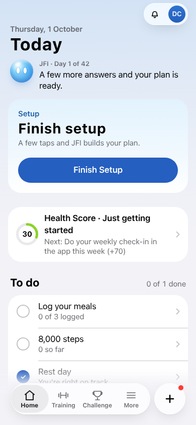
Home shows Finish setup until they do it.
Existing client
Not in the challenge yet: the same film, welcome and setup, with the returning line. Already joined: straight to Home, no film.
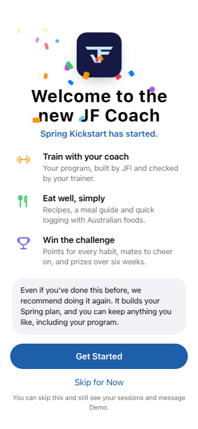
Adds: “Even if you've done this before, we recommend doing it again.”
Their saved answers are kept.
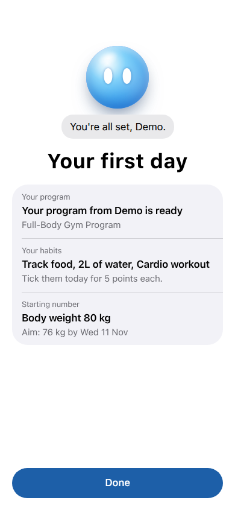
“Your program from <trainer> is ready.”
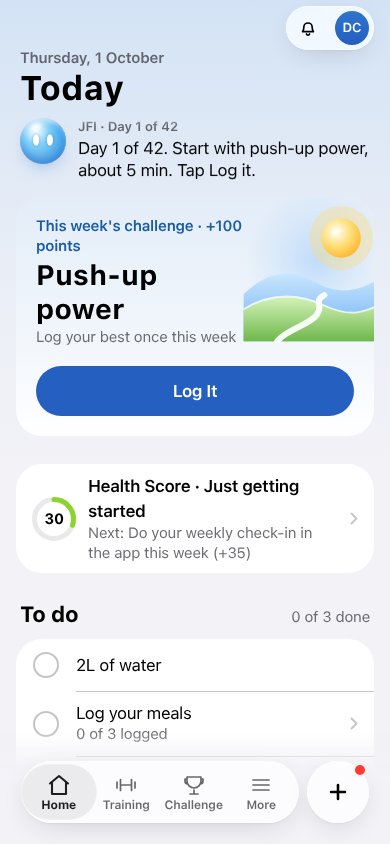
Their sessions, trainer and habits.
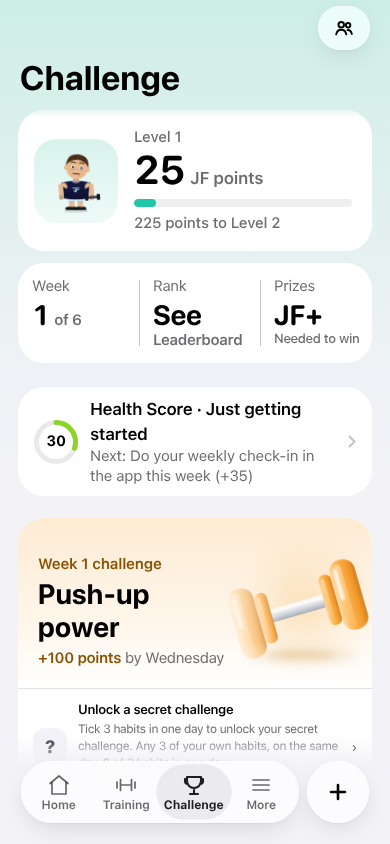
Challenge tab: Finish or redo your setup.
Right now, 12:45
Who gets JFI
Everyone on the app can chat to JFI today. Only challenge members (18 real people) are set up for JFI check-ins, and those are switched off.
| Person | How many | What JFI should do (recommended) |
|---|---|---|
| Did the setup form | 10 | Coach them to what they picked: workouts, habits, meals, goal. Plan at their chosen time, a nudge if it helps, a Wednesday recap. |
| Opened, skipped the form | ~86 | One job: get the form done. One message a day: “Two minutes and your Spring plan's ready.” Then coach as above. |
| Hasn't opened yet | 1,178 | JFI can't reach them inside the app. The push (239 phones), the entrant email and your chat post are the only way in. |
| Challenge sign-ups with no trainer | 835 of the 1,274 | Same as above, plus your sales goal: once they're engaged or asking for help, offer a free session straight into the calendar. |
Recommendation: JFI coaches everyone on the app, not just challenge members. Joining the challenge shouldn't be what switches coaching on.
What you said on Tuesday
Built vs live
| Your plan | Built? | Live? |
|---|---|---|
| Pick your coach and how often it checks in | Yes, in setup | Saved, but nothing reads it yet |
| Morning plan, workout reminder, “two habits before bed”, Wednesday recap, Thursday new challenge | Yes, the JFI rhythm engine | No. Dry run only, and paused since July |
| Home leads with JFI's one move | Yes | Yes |
| JFI knows their form answers (goal, injuries, barriers) | Saved | Not given to JFI chat |
| JFI knows the challenge (points, weekly and secret challenges, prizes) | Partly | Knows the day and week only |
| JFI starts the conversation in the chat | No | No. Pushes only, and 4 in 5 have notifications off |
| Remembers each person across days | No | No. Last 16 messages only |
| Injury, payments, confused → a person | Yes | No. Nobody is set to receive them |
| Non-client → free session booking | In-app card only | Card yes, JFI no |
Setup already promises: “Each day I'll tell you the one thing to do next.” Right now JFI doesn't.
The plan
Today
- Tell people it's started. Push at 5:30pm, clients only, sent over 15 minutes. Entrant email tonight. Make the global chat announcement-only, add everyone, then you post.
- Teach JFI the challenge. Points, this week's challenge, the secret unlock, prizes, “what do I do now”, and where support and cancelling go. Give it their form answers.
- Dry run the check-ins this afternoon. Every message JFI would send gets written down and nothing sends. You read them tonight.
Tomorrow 7am
- JFI check-ins go live for everyone who's done setup. Skippers get the one “finish your setup” nudge. Quiet hours 9pm to 7am, max 3 a day, no duplicates.
- Each check-in also lands in the JFI chat so people without notifications see it when they open the app.
This week
- JFI remembers each person (wins, struggles, what they committed to).
- Missed-workout and 3-days-quiet check-ins. A daily “who's done setup” list for Ava and Gabrielle.
- Fix the 3 bonus-entry links in the welcome email (they've never credited anyone). Secret challenges for weeks 5 and 6. JF+ wording on prizes.
- Learning loop: which messages get opened, which get ignored, adjusted weekly.